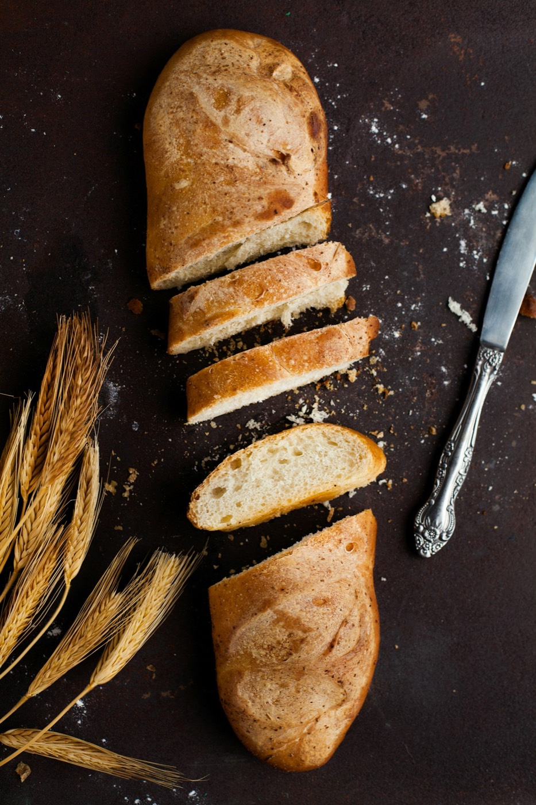
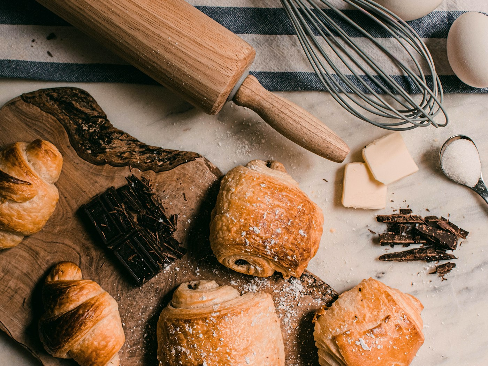
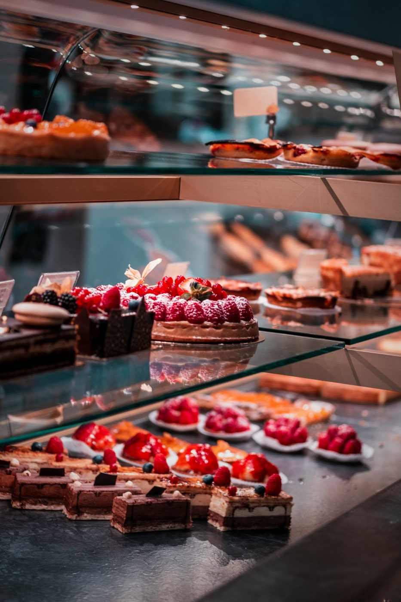

Nos produits
Pains, viennoiseries et pâtisseries, tout est fait sur place, tous les jours sauf le lundi.

Les pains
Pétris le matin, levés lentement, cuits au four à sole.

Les viennoiseries
Du beurre, du beurre et un peu de patience.

Les pâtisseries
Des classiques bretons et des tartes de saison.
Prix indicatifs, inventés pour la démonstration. Les produits « du moment » changent chaque semaine.